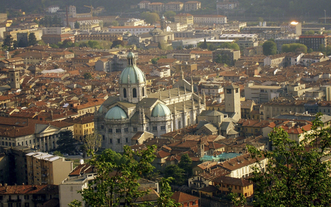
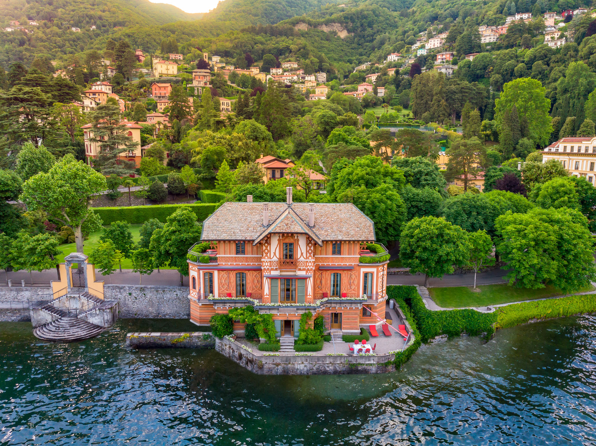

← Back
Lake Como
A Comói-tó (olaszul Lago di Como vagy Lario) egy gleccsereredetű állóvíz
Észak-Olaszországban, Lombardia régióban. 146
-es területével Olaszország harmadik legnagyobb tava, több mint 400 méteres mélysége pedig Európa egyik legmélyebb
tavává teszi. Jellegzetes, fordított „Y” alakját a jégkorszaki Adda-gleccser mozgása alakította ki.
A tó partján számos festői város és pazar villa található, mint például a Villa Olmo, a Villa Serbelloni és a
Villa Carlotta, amelyek történelmi építészetükről és botanikus kertjeikről híresek. A térség enyhe, párás klímája
kedvez a szubtrópusi növényzetnek és a mediterrán kultúráknak, például az olajbogyónak.
Történelmi és gazdasági jelentősége:
Múlt: Már a római idők óta népszerű üdülőhely az arisztokrácia körében; Julius Caesar i.e. 59-ben alapította újra
Como városát Novum Comum néven. A 19. és 20. században világhírűvé vált selyemipara révén.
Jelen: Gazdasága ma leginkább a turizmusra épül, de jelentős a gépgyártás és a kézművesség is.
Kultúra: Számos művészt (pl. Liszt Ferencet, Verdit) és írót (pl. Manzonit, Mark Twaint) inspirált, emellett olyan
nagyszabású filmek helyszíneként is szolgált, mint a Star Wars vagy a Casino Royale.
A tó népszerűsége ugyanakkor komoly kihívásokat is jelent: a tömegturizmus (overtourism) megterheli a helyi
infrastruktúrát és hatással van az ingatlanárakra is.

← Back
City & History
Általános bemutatás
Como Észak-Olaszországban, Lombardia régióban található, a Comói-tó délnyugati ágának végén fekszik, Milánótól
mintegy 45 km-re északra. Como megye székhelye és a tóvidék legnagyobb városa.
Története
Ókor: Már a kelták idején jelentős volt, a rómaiak i. e. 195-ben foglalták el. Julius Caesar és Augustus korában
Novum Comum néven ismerték.
Középkor: A 12. században háborúskodott Milánóval, ami a város lerombolásához vezetett, majd Barbarossa Frigyes
építtette újjá. Később a Visconti és a Sforza családok birtoka volt.
Újkor: Spanyol, francia és osztrák fennhatóság alatt is állt. A selyemszövés Mária Terézia idején indult meg.
1861-ben vált az egyesült Olasz Királyság részévé.
II. világháború: 1945-ben a közelben tartóztatták le a menekülő Benito Mussolinit.
Főbb látnivalók
Duomo (Székesegyház): Észak-Olaszország egyik legjelentősebb műemléke, építése 1396-ban kezdődött, stílusa a
gótikától a barokkig terjed.
Tempio Voltiano: Alessandro Volta fizikus tiszteletére emelt klasszicista épület, ahol találmányait (pl. az első
galvánelemet) őrzik.
Villa Olmo: 18. századi palota gyönyörű parkkal és kilátással a tóra.
Broletto: A 13. században épült korábbi városháza, jellegzetes márvány homlokzattal.
Éghajlat és Demográfia
A város éghajlata mérsékelt, az évi átlaghőmérséklet 13°C körül alakul, a legmelegebb hónap a július (átlag max.
29°C). Lakossága 2023-as adatok szerint kb. 83 184 fő.

← Back
Villas
A Comói-tó környéke (Olaszország) híres luxusvilláiról, amelyek lenyűgöző tóparti
panorámát, történelmi kerteket és magas szintű kényelmet kínálnak. A legnépszerűbbek közé tartozik a Villa del
Balbianello (Lenno) és a Villa Olmo (Como), míg a szállások között a Booking.com és Airbnb kínálatában számos
medencés, panorámás villa található.
Népszerű Villák és Területek a Comói-tónál:
Villa del Balbianello (Lenno): A tó egyik legszebb, kertjeiről és filmforgatásairól híres villája.
Villa Olmo (Como): Nagy zöld parkkal rendelkező, a 18. század végén épült neoklasszicista villa.
Villa Carlotta (Tremezzo): Botanikus kertjéről és műtárgyairól ismert helyszín.
Villa Wirnica & The Greenhouse Luxury Villa on Lake Como: Magasra értékelt modern szállások, írja a Booking.com.
Villa Mara - By Myhomeincomo: A városközponthoz közel, a Volta-templomtól 3 km-re található.
